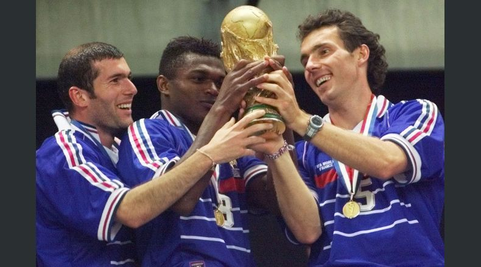

La Copa Mundial de la FIFA Francia 1998 fue la decimosexta edición de la Copa Mundial de Fútbol, se desarrolló en Francia, entre el 10 de junio y el 12 de julio de 1998. Francia se convirtió en el tercer país en organizar dos campeonatos (tras México e Italia), 60 años después del mundial realizado en 1938. La selección local se coronó campeona por primera vez al derrotar en la final del torneo realizada en el nuevo Stade de France, en Saint-Denis, a Brasil por 3:0. La sorpresa del torneo fue el combinado de Croacia que en su primera participación tras la desintegración de Yugoslavia, obtuvo el tercer lugar. En este Mundial se mostraron 21 tarjetas rojas, récord en la historia de las Copas del Mundo, hasta Alemania 2006, donde se mostraron 28 tarjetas rojas. La mascota del torneo fue Footix, un gallo azul, símbolo del país anfitrión.
